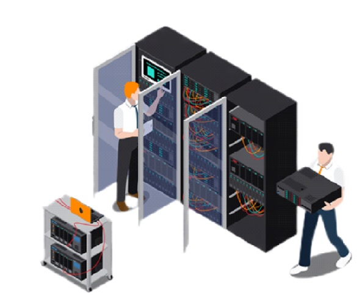

Наша компания специализируется на монтаже и обслуживании сетей
связи и передачи данных.
При монтаже сетей выполняются следующие работы:
⦁ Проектирование сетей связи: компания разрабатывает проекты
сетей связи,
учитывая потребности заказчика, особенности территории и технические
требования.
⦁ Монтаж сетевого оборудования: специалисты компании
осуществляют установку и настройку сетевого оборудования,
такого как коммутаторы, маршрутизаторы, активное и пассивное
оборудование.
⦁ Тестирование и наладка: после завершения монтажа специалисты
компании проводят тестирование сети
для проверки ее работоспособности и стабильности.
⦁ Обслуживание и техническая поддержка: компания предоставляет
услуги по техническому обслуживанию и мониторингу работы сети.
